Bienvenida
Con enorme emoción doy la bienvenida a este X Congreso Universitario Nacional de Neuropsicología, una iniciativa que surgió hace 10 años como una oportunidad para que nuestra comunidad universitaria, los jóvenes que formamos en esta casa superior de estudios, puedan vivir tres experiencias formativas necesarias para crear, desarrollar y fortalecer la cultura universitaria de actualización en la realidad boliviana y latinoamericana, y el conocimiento científico: (1) Asistir a un evento académico -científico que cumpla la misión de mostrar los últimos avances en ciencia, (2) Ser organizador de un congreso en toda la experiencia de articular los tremas académicos y logísticos para la realización de una actividad estrictamente formativa y (3) Brindar el espacio y oportunidad de exposición a los jóvenes universitarios en las distintas modalidades de Poster, Simposio, Trabajo Libre, Mesa Redonda y Material Audiovisual.
En esta décima edición del Congreso y como cada año, contamos con la presencia de un científico destacado y un personaje distinguido. El honor de ser reconocido como científico destacado recae en el Dr. José Luna Muñoz, uno de los profesionales más importantes de la región, en la lucha contra la enfermedad de Alzheimer y otros trastornos neurocognitivos. En el caso de personaje distinguido esta distinción recae en el Dr. Carlos Dabdoub, destacado hombre de ciencia, al frente de el Instituto de Neurociencias de la UNIFRAZ y la vicerrectoría de esta universidad amiga.
Celebramos los 10 años y con ello hacemos historia de manera constante, ininterrumpida y comprometida viendo a los estudiantes que pasan por el congreso convertidos en profesionales entregados a la atención de pacientes que requiere la experticia de las neurociencias comportamentales.
Gracias por acompañarnos en esta primera década y aun vamos por más, porque sin historia la vida no puede contarse ni recordarse.
Dra. Ninoska Ocampo-Barba
PRESIDENTE HONORARIA DEL CONGRESO
 Dr. José Luna Muñoz
Dr. José Luna Muñoz
El X Congreso Universitario Nacional de Neuropsicología se complace en reconocer al Dr. José Luna Muñoz como Científico Destacado 2026, por su sobresaliente trayectoria y valiosas contribuciones al desarrollo de las ciencias médicas y la neurociencia en América Latina.
Doctor en Ciencias Médicas y de la Salud por la Universidad Nacional Autónoma de México, el Dr. José Luna Muñoz se ha especializado en neuropatología de demencias y enfermedad de Alzheimer, consolidándose como un referente en el estudio de los procesos neurodegenerativos. Su sólida formación académica y su compromiso con la investigación le han permitido aportar significativamente al conocimiento científico en este campo.
Dr. José Luna Muñoz
Ha sido distinguido como Doctor Honoris Causa en Ciencias Biomédicas por la Cumbre Mundial del Conocimiento 2022, reconocimiento que refleja la relevancia e impacto de su labor investigativa.
Asimismo, es Director y Fundador del Biobanco Nacional de Demencias, iniciativa que fortalece la investigación científica y el abordaje clínico de estas patologías en la región. Su trabajo se distingue por integrar ciencia, innovación y compromiso social, posicionándolo como una figura clave en el avance de la salud neurológica.
Actualmente, se desempeña como investigador y académico en la Universidad politecnica de Pachuca (UPP) donde contribuye activamente a la formación de nuevos profesionales.
Con orgullo y admiración, celebramos su legado y le damos bienvenida como Científico Destacado 2026 de nuestro X Congreso Universitario Nacional de Neuropsicología.
 Dr. Carlos Dabdoub
Dr. Carlos Dabdoub
El X Congreso Universitario Nacional de Neuropsicología se honra en reconocer al Dr. Carlos Dabdoub como Personaje Distinguido 2026, en mérito a su destacada trayectoria académica, profesional y de gestión en el ámbito de las ciencias médicas a nivel nacional e internacional.
Desde su formación en la Universidad Nacional de La Plata (Argentina), donde obtuvo la Licenciatura en Medicina y el Doctorado en Ciencias Médicas, el Dr. Carlos Dabdoub ha consolidado una carrera de excelencia, complementada con especializaciones en Neurocirugía Pediátrica, Neurointensivismo y Gerencia en Salud en Brasil y Japón.
Su formación se ve fortalecida con estudios de Maestría en Administración y Gerencia en Salud, orientados a la optimización de sistemas sanitarios y a la mejora continua de la atención médica, reflejando un compromiso constante con la innovación y la calidad en el ámbito de la salud.
Con respeto y reconocimiento, celebramos su valioso aporte a las ciencias médicas y a la educación superior. El X Congreso Universitario Nacional de Neuropsicología celebra su designación como personaje distinguido 2026 y nos honra tener entre nosotros
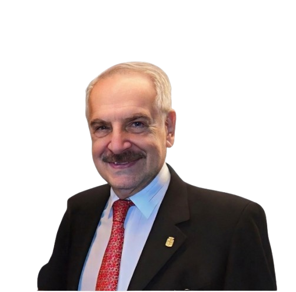
Dr. Carlos Dabdoub
Ha desempeñado un rol destacado en la gestión académica, ejerciendo actualmente como Vicerrector de la Universidad Franz Tamayo, sede Santa Cruz de la Sierra, desde donde impulsa el desarrollo de la educación superior con una visión estratégica y humanista.
El Dr. Dabdoub representa un liderazgo comprometido con la excelencia, la formación de profesionales íntegros y el fortalecimiento del sistema de salud, contribuyendo significativamente al progreso académico y científico en la región.
Conferencistas Magistrales
Dr. José Luna Muñoz
Dr. Carlos Dabdoub
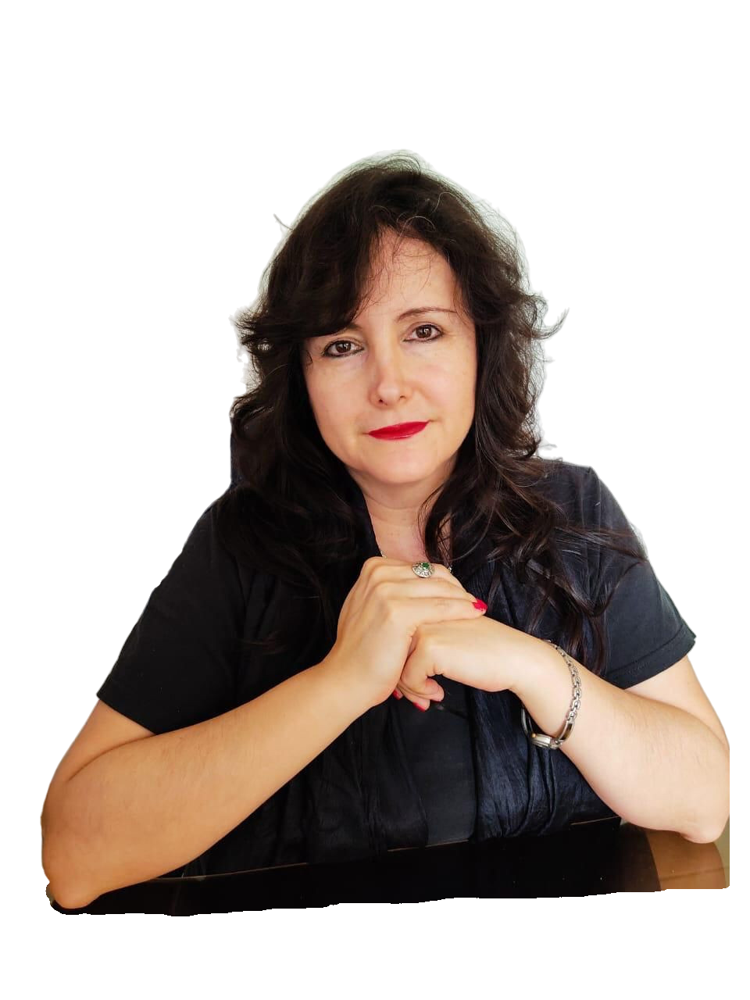
Dra. NinosKa Ocampo-Barba
 Dra. Isabel Peralta
Dra. Isabel Peralta
Dr. Miguel Pérez
Talleres pre congreso
Taller A
Taller B
Taller C
Taller D
Taller E

Taller F
Invitados Especiales
Dra. Nidia Maria Soria Medina
Dra. Alejandra Martínez Barrientos
MSc. Juan Carlos Rivero Gutiérrez
Ing Mauricio Velez
Dra. Pilar Gamboa
Conferencista Invitado
Lic. Alejandra Gutierrez
Lic. Fernando Calderón Encinas
Dra. Erika Juárez
 Dra. Izabel Hazin Pires
Dra. Izabel Hazin Pires
MsC. Diego Andrés Enríquez Contreras
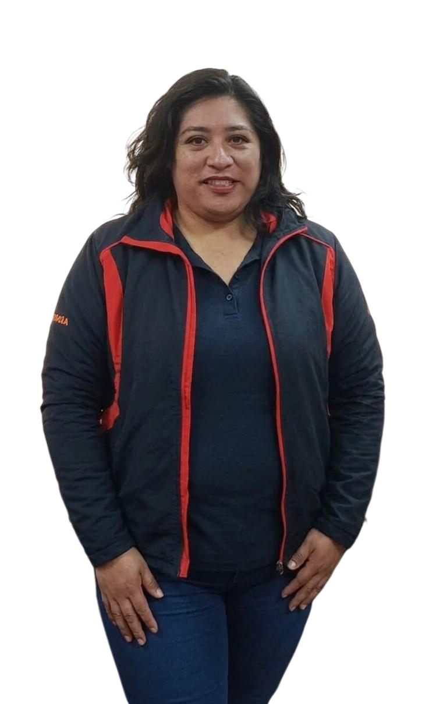
Lic. Shirley Lisondo
 Dr. Martín Ingelsson
Dr. Martín Ingelsson
Mesa Redonda
Mesa 1
Mesa 2
Mesa 3
Conversatorio
Ubicaciones
Organizado por
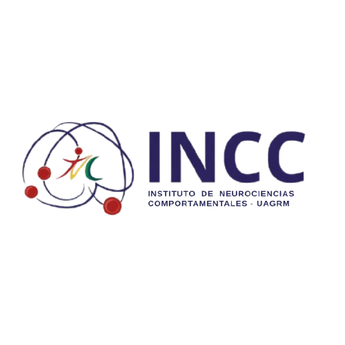
Auspiciadores
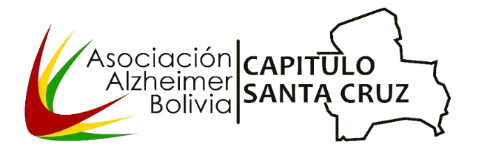
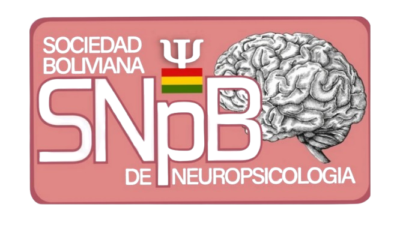
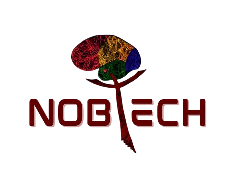
Perfiles Magistrales
Dr. José Luna Muñoz
Biobanco Nacional de Demencias: ciencia y sociedad unidas para el diagnóstico e investigación
- Doctor en Ciencias Médicas y de la Salud, Universidad Nacional Autónoma de México.
- Especialista en Neuropatología de Demencias y Enfermedad de Alzheimer, Universidad Nacional Autónoma de México
- Doctor Honoris Causa en Ciencias Biomédicas, Cumbre Mundial del Conocimiento 2022
- Investigador y académico en la Facultad de Estudios Superiores Cuautitlán, Universidad Nacional Autónoma de México.
- Director y Fundador del Biobanco Nacional de Demencias en la Universidad Politécnica de Pachuca
Dr. Carlos Dabdoub
Salud mental rumbo a Santa Cruz 2061
- Licenciatura en Medicina, Universidad Nacional de La Plata-Argentina
- Especialidad en Neurocirugía Pediátrica, Neurointensivismo y Gerencia en Salud
- Maestría en Administration/Gerencia en Salud (formación ejecutiva vinculada a su práctica profesional en Brasil)
- Doctorado en Ciencias Médicas, Universidad Nacional de La Plata-Argentina
- Vicerrector de la Universidad Franz Tamayo, sede Santa Cruz de la Sierra
Dra. NinosKa Ocampo-Barba
Salud cerebral en adultos mayores: desafíos y estrategias en contextos comunitarios
- Doctora Honoris Causa México-España. Cumbre Mundial del Conocimiento, México.
- Docente investigadora de la carrera de psicología. Universidad Autónoma “Gabriel René Moreno”
- Presidente de la Sociedad Boliviana de Neuropsicología
- Presidente de la Asociación Alzheimer Bolivia
- Directora del Instituto de Neurociencias Comportamentales. Universidad Autónoma “Gabriel René Moreno”. Facultad de Humanidades
Dra. Isabel Peralta
Importancia de la neuropsicoinmunologia en la formacion del psicologo.
- Licenciatura en Psicología, Universidad de Granada-España
- Especialidad en Psicología General Sanitaria, Universidad de Granada-España
- Maestría en Psicología General Sanitaria, Universidad de Granada-España
- Doctorado en Psicología, Universidad de Granada-España
- Catedrática Titular y Coordinadora de Bienestar y Salud Mental, Universidad de Granada
Dr. Miguel Pérez
Cerebro, delito y evidencia: el papel de la neuropsicología en los tribunales modernos
- Licenciatura en Psicología, Universidad de Granada
- Doctorado en Neuropsicología Clínica, Universidad de Granada (España).
- Especialista en Neuropsicología Clínica y Rehabilitación Neuropsicológica, Universidad de Granada - España.
- Catedrático de Neuropsicología Clínica en la Universidad de Granada.
- Coordinador del Grupo de Investigación “Neuropsicología y Psico Neuro Inmunologías Clínicas” en la Universidad de Granada, Centro de investigación Mente, Cerebro y Comportamiento (CIMCYC)

Envío de Trabajos
Revise cuidadosamente las normativas antes de enviar su resumen. El comité evaluará las propuestas y confirmará aceptación.
ESTUDIANTES DE
PREGRADO
PROFESIONALES Y
POSGRADO
Aval y Certificación
El congreso cuenta con el aval académico y científico de reconocidas instituciones nacionales e internacionales, garantizando la calidad y el rigor de las actividades programadas. Se otorgarán certificados con valor curricular.
Ejes Temáticos
Neuropsicología Infantil
Estudio de las relaciones entre el cerebro y la conducta en niños y adolescentes, abordando trastornos del neurodesarrollo y aprendizaje.
Neuropsicología del Adulto
Evaluación e intervención de las alteraciones cognitivas y conductuales derivadas de daño cerebral adquirido o patologías neurológicas en la etapa adulta.
Neuropsicología del Adulto Mayor
Enfoque en el envejecimiento normal y patológico, abordando el deterioro cognitivo, las demencias y estrategias de estimulación cognitiva.
Neuropsicología Clínica
Aplicación práctica de los conocimientos neuropsicológicos para la evaluación, diagnóstico y tratamiento de pacientes con disfunciones cerebrales.
Neuropsicología Educativa
Integración de los principios neuropsicológicos en el ámbito escolar para optimizar los procesos de enseñanza-aprendizaje y atender necesidades educativas especiales.
Neuropsicología Transcultural
Estudio de cómo los factores culturales, lingüísticos y sociodemográficos influyen en el desarrollo cerebral, la cognición y la evaluación neuropsicológica.
Neuropsicología Forense
Aplicación de la neuropsicología en el ámbito legal y jurídico, aportando peritajes sobre el estado cognitivo y mental de individuos implicados en procesos judiciales.
Evaluación y rehabilitación neuropsicológica
Métodos, instrumentos y programas diseñados para medir el perfil cognitivo y restaurar o compensar las funciones alteradas tras un daño cerebral.
Síndromes Neuropsicológicos
Análisis clínico de los conjuntos de síntomas y signos cognitivos y conductuales (afasias, apraxias, agnosias, amnesias, etc.) resultantes de lesiones cerebrales.
Neurolingüística
Estudio de los mecanismos cerebrales que subyacen a la comprensión, producción y adquisición del lenguaje, tanto en estados de salud como en patología.
Neurotecnología
Uso de herramientas tecnológicas avanzadas (realidad virtual, neuroimagen, interfaces cerebro-computadora) aplicadas a la evaluación y rehabilitación neuropsicológica.
Psiconeurofisiología
Exploración de las bases fisiológicas de los procesos psicológicos, analizando la interacción entre el sistema nervioso, la conducta y la cognición.
Psiconeuroinmunología
Estudio de las interacciones bidireccionales entre el sistema nervioso central, el sistema endocrino y el sistema inmunológico, y su impacto en la salud mental y física.
Programa Completo
07:00 - 08:00
ACREDITACIÓN
08:00 - 09:30
TALLER A "Conducta, emocion y aprendizaje: herramientas de análisis funcional de la conducta para contextos educativos"
Lic. Adriana Zubieta Molina, Lic. Carolina Coronado
09:30 - 11:00
TALLER B "La neurodivergencia en la Psicología"
Lic. Pedro Viveros, Lic. Yoselin Medina
11:00 - 12:30
TALLER C “Cómo se desactiva la procrastinación: explicación Neuropsicológica”
Lic. Mónica Gandarillas, Lic. Yanira Garamendi
12:30 - 14:00
TALLER D ''No era flojera”: comprensión Neuropsicológica del TDAH en la adultez”
Lic. Kristel Pacheco
14:00 - 15:30
TALLER E "Neuropsicología de las enfermedades raras"
Lic. Daniela Ramos
15:30 - 16:30
TALLER F "Análisis de caso forense desde el derecho a la Neuropsicología"
Dra. Ninoska Ocampo-Barba, Dr. Alejandro Mansilla Arias
14:30 - 17:00
ACTO DE INAGURACIÓN
Inscripción
La inscripción recepcionada por la Asociación Alzheimer Bolivia (AAB) capítulo Santa Cruz a favor de las nuevas generaciones de profesionales en la atención de pacientes con la enfermedad de Alzheimer, su familia y cuidadores.
De esta manera la AAB agradece el comprometido apoyo voluntario del equipo del Instituto de Neurociencias Comportamentales de la Facultad de Humanidades de la Universidad Autónoma Gabriel René Moreno en, favor de las personas aquejadas por esta terrible enfermedad.
Tu participación en este congreso apoyará a la delegación de estudiantes universitarios que representarán a Bolivia en el "XIX Congreso Latinoamericano de Neuropsicologia a realizarse en Merida-México en octubre del 2026
Gracias INCC!
Extranjeros
(Estudiantes)
$ 25
- Acceso a conferencias
- Certificado con valor curricular
Estudiantes Pregrado
Bs. 80
- Acceso a conferencias
- Certificado con valor curricular
Estudiantes Posgrado
Bs. 100
- Acceso a conferencias
- Certificado con valor curricular
Talleres
Bs. 20
- Acceso a conferencias
- Certificado con valor curricular
¿Quiénes somos?
INSTITUTO DE NEUROCIENCIAS COMPORTAMENTALES
El Instituto de Neurociencias Comportamentales se crea al interior de la Facultad de Humanidades de la Universidad Autónoma Gabriel René Moreno, como consecuencia de una visita protocolar inspiradora de una delegación boliviana al Instituto de Neurociencias de la Universidad de Medellín, en Medellín – Colombia, en agosto del 2015; en marzo del 2016 inician las gestiones facultativas para dar inicio a la creación del instituto.
En fecha 24 de julio del 2016, se nombra oficialmente a la Dra. Ninoska Ocampo-Barba como directora del 1er. Instituto de Neurociencias Comportamentales en el sistema universitario boliviano.
Seis años antes, en 2010, se da inicio a un equipo de estudiantes denominado CENTURIONES, dando paso a la función de ayudantía de cátedra en las materias de Neuropsicología I y II, parte de la carrera de Psicología perteneciente a la Facultad de Humanidades, desde esa fecha hasta la actualidad, y durante estos once años de trabajo, este equipo de jóvenes universitarios desarrolla actividades diversas permitiéndoles incursionar más allá de contenidos sólo teóricos en intervenciones prácticas a través de programas de servicio social.
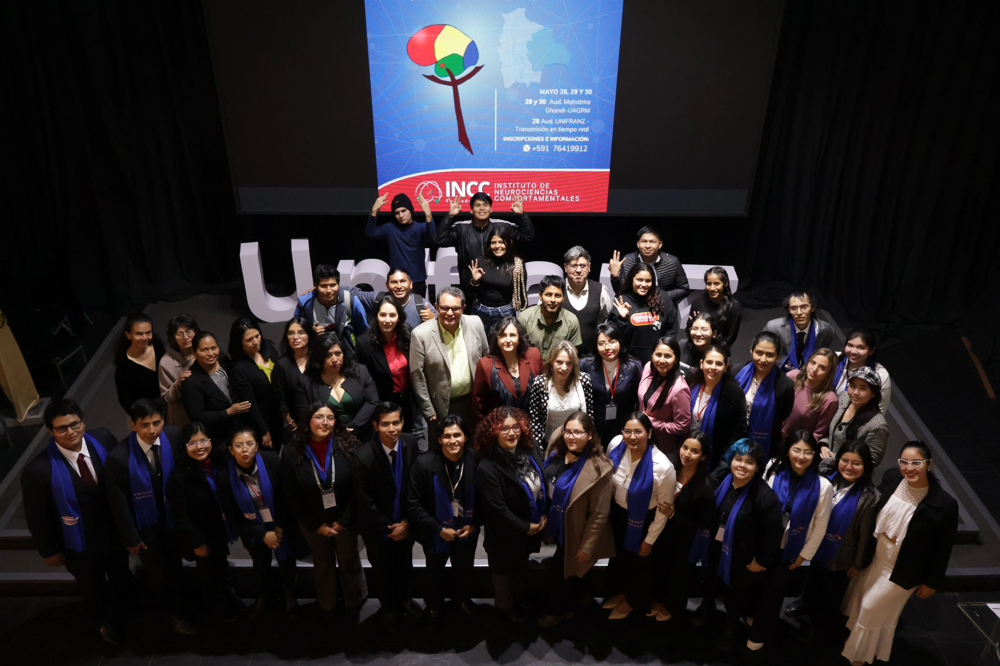
NEURONAUTAPS
Como etapa final del periodo de seis semestres de formación pre-grado en la disciplina neuropsicológica, un estudiante pasa a ser NEURONAUTAPS cuando está preparado para enfrentar el reto final de su formación, que supone el realizar una pasantía pre-grado en una universidad extranjera.
El sueño de alcanzar una de las muchas metas que cada estudiante sin límite se establece en este grupo, es la base fundamental para convertirse en inquieto, innovador y eficiente astronauta de la Neuropsicología Boliviana.
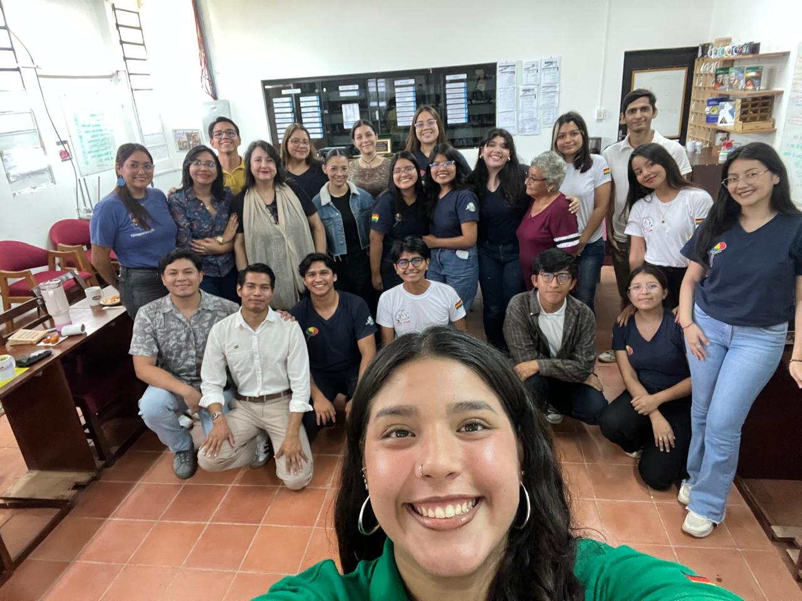
Asociación Alzheimer Bolivia
La Asociación Alzheimer Bolivia (AAB), es una institución sin fines de lucro, creada en el año 2007, buscando orientar y difundir información sobre la enfermedad de Alzheimer. Pretendemos mejorar la calidad de vida de las personas con esta enfermedad, de sus familiares y entorno.
En la actualidad, estamos en siete de las nueve ciudades capitales del país, desarrollando campañas de concienciación, talleres de capacitación y atención de pacientes de manera ambulatoria. Nos enorgullece la promulgación en 2009, de la primera ley en Latinoamérica de protección a pacientes con Alzheimer y otras demencia.
Servir a los que necesitan es una obligación moral y un reto científico y por ello nuestros principales aliados son los familiares, los profesionales, gobiernos regionales y los estudiantes universitarios, todos ellos como actores sociales capaces de generar las acciones para mejorar la calidad de vida de las personas aquejadas por esta enfermedad.
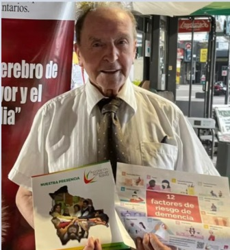
Sociedad Boliviana de Neuropsicología
La Sociedad Boliviana de Neuropsicología (SNpB) se funda el 15 de octubre de 1994 en la ciudad de La Paz, por iniciativa del Dr. Rene Calderón Soria, pionero de la Neuropsicología en nuestro país.
En 2012, la SNpB resuelve denominar a su Congreso Nacional bianual "Rene Calderón Soria", creando además bajo su nombre una beca destinada a impulsar y apoyar la labor investigativa de estudiantes. Este destacado hombre de ciencia boliviano marca el inicio de las iniciativas de atención a poblaciones afectadas por trastornos del neurodesarrollo y síndromes neuropsicológicos.
La SNpB ha contemplado la posibilidad de membresía como MIEMBRO ASPIRANTE, para estudiantes pre-grado interesados en el estudio y trabajo neuropsicológico y MIEMBROS TITULARES a los profesionales de ciencias afines a la Neuropsicología.
El objetivo fundamental de nuestra sociedad científica es desarrollar la Neuropsicología en Bolivia desde todos los enfoques y al servicio de todos los grupos etáreos.
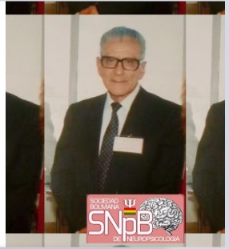
Comité Organizador
Dra. Ninoska Ocampo-Barba
Presidente Honoraria
Univ. Daniela Escobar Fernandez
Presidente Comité Científico
Univ. Henry Salen Espinoza Pinto
Presidente X CUNNP
Lic. Flavia Ozuna Salinas
Coordinadora X CUNNP
Lic. Karol Argote
Coordinadora de proyectos
Equipo Logístico
Univ. Luis Fernando Ramos Menacho
Univ. Carla Beatriz Flores Jordan
Sebastian Rodriguez Gonzales
Edward Gabriel Daza Aceituno
Univ. Karla Celeste Galarza Cordero
Univ. María José Salazar
Univ. Juan Esteban Pardo Aguilera
Univ. Sofía Riojas Parada
Comité Científico
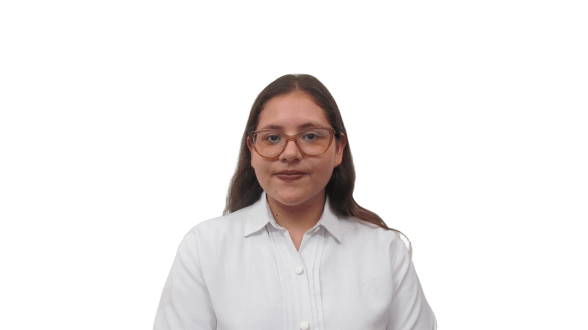
Vivian Nicole Davalos Padilla
Adam Joseph Fernandez
Univ. Camila Dávalos
Univ. Carla Gabrielle Mendoza Ribera
Luciana Sánchez Tapia
Equipo de Difusión
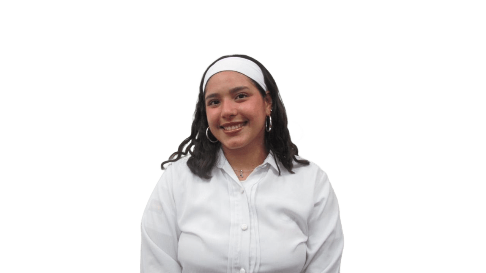
Univ. Luana Coimbra Montesinos
Univ. Micaela Pizarroso Porcel
Univ. Tamara Torrez Veintemillas
Univ. Carla Beatriz Flores Jordan
Univ. Fabiana Sotomayor Aranibar
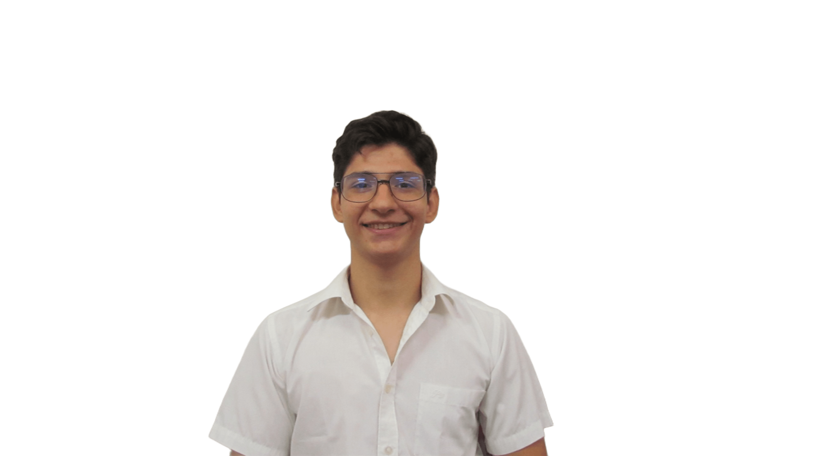
Univ. Alan Flores Forest
Equipo de Inscripción
Univ. Alejandra Orellana Flores
Lic. Gabriela Ferriel
Licenciada en Psicología